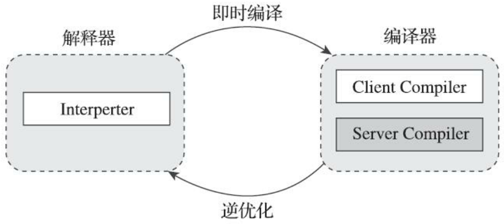
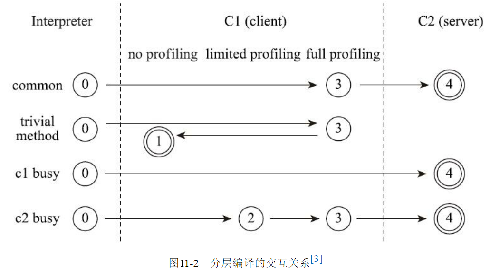

1. 概述
如果我们把字节码看作是程序语言的一种中间表示形式（Intermediate Representation，IR）的话，那编译器无论在何时、在何种状态下把Class文件转换成与本地相关的二进制机器码，它都可以视为整个编译过程的后端。
2. 即时编译器
虚拟机发现某个方法或代码块的运行特别频繁，就会把这些代码认定为“热点代码”（Hot Spot Code），为了提高热点代码的执行效率，在运行时，虚拟机将会把这些代码编译成本地机器码，并以各种手段尽可能地进行代码优化，运行时完成这个任务的后端编译器被称为即时编译器。
2.1. 解释器与编译器
目前主流的商用Java虚拟机，譬如HotSpot、OpenJ9等，内部都同时包含解释器与编译器：
当程序需要迅速启动和执行的时候，解释器可以首先发挥作用，省去编译的时间，立即运行。
程序启动后，随着时间的推移，编译器逐渐发挥作用，把越来越多的代码编译成本地代码，这样可以减少解释器的中间损耗，获得更高的执行效率。
当程序运行环境中内存资源限制较大，可以使用解释执行节约内存。
解释器还可以作为编译器激进优化时后备的“逃生门”。
编译器根据概率选择一些不能保证所有情况都正确，但大多数时候都能提升运行速度的优化手段，当激进优化的假设不成立，如加载了新类以后，类型继承结构出现变化、出现 “罕见陷阱” 时可以通过 逆优化 退回到解释状态继续执行。
总之，整个Java虚拟机执行架构里，解释器与编译器经常是相辅相成地配合工作。

HotSpot虚拟机中内置了两/三个即时编译器：
- 客户端编译器：又称C1编译器
- 服务端编译器：又称C2编译器
- Graal编译器：在JDK10中出现，长期目标是代替C2的Graal编译器。但Graal编译器目前还处于实验状态。
在分层编译的工作模式出现以前，HotSpot虚拟机通常是采用解释器与其中一个编译器直接搭配的方式工作，程序使用哪个编译器只取决于虚拟机运行的模式，HotSpot虚拟机会根据自身版本与宿主机器的硬件性能自动选择运行模式，用户也可以使用“-client”或“-server”参数去强制指定虚拟机运行在客户端模式还是服务端模式。
- 无论采用的编译器是客户端编译器还是服务端编译器，解释器与编译器搭配使用的方式在虚拟机中被称为 “混合模式” 。
- 用户也可以使用参数“-Xint”强制虚拟机运行于 “解释模式” ：这时候编译器完全不介入工作，全部代码都使用解释方式执行。
- 也可以使用参数“-Xcomp”强制虚拟机运行于 “编译模式” ：这时候将优先采用编译方式执行程序，但是解释器仍然要在编译无法进行的情况下介入执行过程。
由于即时编译器编译本地代码需要占用程序运行时间，通常要编译出优化程度越高的代码，所花费的时间便会越长；而且想要编译出优化程度更高的代码，解释器可能还要替编译器收集性能监控信息，这对解释执行阶段的速度也有所影响。
为了在程序启动响应速度与运行效率之间达到最佳平衡，HotSpot虚拟机在编译子系统中加入了 分层编译 的功能：
- 第0层：程序纯解释执行，并且解释器不开启性能监控功能。
- 第1层：使用客户端编译器将字节码编译为本地代码来运行，进行简单可靠的稳定优化，不开启性能监控功能。
- 第2层：仍然使用客户端编译器执行，仅开启方法及回边次数统计等有限的性能监控功能。
- 第3层：仍然使用客户端编译器执行，开启全部性能监控，除了第2层的统计信息外，还会收集如分支跳转、虚方法调用版本等全部的统计信息。
- 第4层：使用服务端编译器将字节码编译为本地代码，相比起客户端编译器，服务端编译器会启用更多编译耗时更长的优化，还会根据性能监控信息进行一些不可靠的激进优化。

2.2. 编译对象与触发条件
热点代码主要有如下两类：
- 被多次调用的方法。
- 被多次调用的循环体。